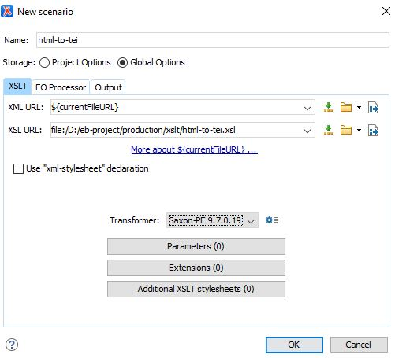
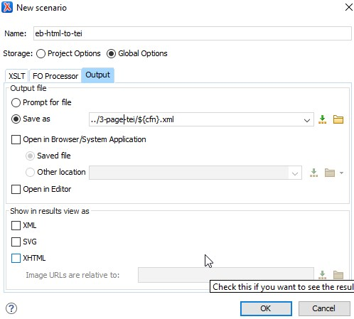

Work in batches again, using the html-to-tei.xsl script.
Select the batch of HTML files in the Oxygen Project
window, right-click, and select Transform > Configure transformation scenarios…
In the window that opens, select html-to-tei under
Global and click Edit. This
opens the Edit scenario window.
If you do not see html-to-tei, you will have to
locate it. Select New > XML Transformation with XSLT. This opens the New/Edit scenario
window.

New scenario is the same as Edit
scenario but with less prepopulated information. Name the
new scenario html-to-tei.
On the XSLT tab, click the folder icon for the
XSL URL field and navigate to
eb-project/production/xslt/. Select
html-to-tei.xsl.
On the XSLT tab of the New/Edit
scenario window, make sure XML URL reads
$(currentFileURL).
Change Transformer to Saxon-PE 9.7.0.x
.
On the Output tab, set Save as: to
../3-page-tei/${cfn}.xml. This outputs the transformed
files directly into the correct subfolder.
Figure: Output tab of the New/Edit scenario window

Uncheck Show in results view as: XML. (This prevents
Oxygen from opening 250 windows.)
Click OK to close the Edit Scenario
window and return to the Configure transformation
scenarios… dialogue.
Click Apply Associated to run the scenario on the
selected files and save the results in the 3-pages-tei
folder.
Validate all of the new XML files in the 3-pages-tei
folder. To do this, select all of the new files in the Oxygen
Project window. Right-click, Validate > Validate. If there are no errors, the transformation is complete.
Sometimes you will encounter errors at this stage. This should be rare
and the errors should be relatively simple. A basic knowledge of TEI is all that is
needed to correct them manually. If you are not sure, please ask. If no one can help
you, make a note of the pages with errors and leave it for the person in
charge.
.jpg)